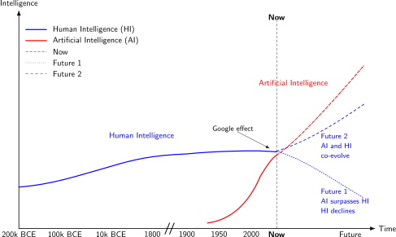
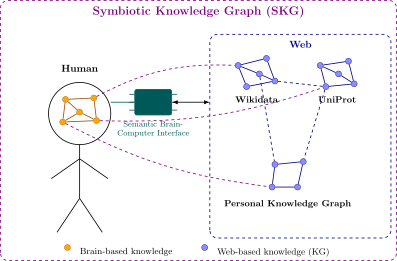

A potential future of heightened human cognition
Pete is on his bike, on route to the grocery store, while being continuously informed on the best route through his Semantic Brain-Computer Interface (SBCI). While underway, he learns from his SBCI that the peanut butter he wanted to buy was just sold out. Immediately, he reroutes to an alternative store after reasoning together with his integrated GPS agent, city-provided grocery stores Knowledge Graph, and his personal memory-based grocery list Knowledge Graph. This reasoning relies upon semantically aligned concepts across these Knowledge Graphs. He does all of this without having to use devices that rely on his sensory or motor functions. Instead, he interacts and reasons on local and remote data via his brain, thanks to his SBCI.
Hereafter, we present a research vision that depends on advancements in cognitive neuroscience and Brain-Computer Interfaces (BCIs), which are rapidly progressing in recent years. While parts of this vision rely on what BCI technology already offers today, other parts are more speculative and assume future BCI advancements. Concretely, we start by motivating the need for this augmented cognition, and explain its historical framing. Next, we discuss what current and future scientific challenges are, and the potential impact of achieving this vision.
Need to co-evolve human and artificial intelligence
Since just a few decades ago, we started creating Artificial forms of Intelligence (AI), which are rapidly advancing [1]. Some argue that this AI may soon match or exceed Human Intelligence (HI) [2]. At the same time, humans increasingly offload cognitive tasks to external techical systems, such as calculators, search engines, and AI chatbots, which leads to automation-induced skill degradation, also known as the Google effect [3]. While there is an ongoing debate whether or not human intelligence itself is declining [4], the relative gap between individual human capability and increasingly capable AI is widening. If these two trends continue, we may be evolving towards a future where AI surpasses HI (Future 1), which leads to an uncertain future of humanity. In this paper, we argue for the need of a course correction (Future 2), where HI co-evolves with AI, which can be considered a necessity due to biological evolution being much slower compared to our technological advancement, as shown in Fig. 1.

Fig. 1: Evolution of Human Intelligence (HI) and Artificial Intelligence (AI) over time, with two possible futures where HI declines while AI continues to advance (Future 1), or HI and AI co-evolve (Future 2). Axes are illustrative and non-empirical.
Scientific challenges of augmenting human intelligence

Fig. 2: A Symbiotic Knowledge Graph (SKG) is the integration of a Brain-based Knowledge Graph (BKG) with external Knowledge Graphs. For this, a hypothetical Semantic Brain-Computer Interface (SBCI) provides the connection point between the two worlds. This enables information to be virtually interlinked across this neural-digital boundary, as a foundation for co-evolving human and artificial intelligence.
The Semantic Web vision has successfully enabled knowledge interoperability among machines, which can aid human objectives. A next big challenge is to make such semantic knowledge interoperable with human cognition itself, to directly augment human intelligence. To augment human intelligence, we propose working towards an integration of human and artificial intelligence. As shown in Fig. 2, we foresee the creation of Symbiotic Knowledge Graphs (SKGs), which consist of the integration of human knowledge stored in the brain, and external knowledge stored on the Web. This is similar, yet different to the concept of a Personal Knowledge Graph [10], which contains information associated with a person. To achieve this, the Semantic Web stack already offers important building blocks, such as RDF to represent formal knowledge, and SPARQL to retrieve knowledge. Concretely, global identifiers (IRIs) and shared ontologies provide mechanisms for a person’s internal concepts to be aligned to another person’s concepts, and to those within an external KG. Next, SPARQL federation enables query-driven integration of knowledge that is spread across humans and machines. Furthermore, standardized reasoning and proof languages provide the basis for shared reasoning across humans and machines.
This vision can be positioned within the research field of Human Cognitive Augmentation [11], which focuses on using technology to enhance human mental capabilities (e.g. memory, focus, and decision-making). While conventional Human-Computer Interfaces (HCIs) (e.g. touch screens, augmented reality devices) could be used that provide actionable information when needed, they still require indirectly interfacing through a sensory and motor functions (e.g. eyes, hands, …). In contrast, Brain-Computer Interfaces (BCIs) interface with neural tissue directly, for example by capturing neural activity (e.g. Neuralink), or by stimulating neural tissue to write sensory information. BCIs can be invasive (e.g. intracortical electrode arrays), or non-invasive (e.g. EEG). While Knowledge-Graph-based HCIs are already commonplace within our society (e.g. Google Lens, IKEA Place, Microsoft HoloLens), the integration of Knowledge Graphs and BCIs remain unexplored. Despite current BCI bandwidth being very limited [12, 13], they may ultimately enable tighter and higher bandwidth integration between humans and computational systems than is possible with HCIs, as BCIs bypass conventional sensory and motor pathways.
Hereafter, we provide a high-level roadmap that spans several research fields to achieve this vision. Concretely, we first discuss which opportunities already exist within current BCI technology to create Semantic Brain-Computer Interfaces (SBCIs). Next, we discuss which future advancements would be needed in BCI technology to fully realize the potential of SBCIs.
Current challenges and opportunities for SBCIs
Human cognition is defined as the mental framework that is responsible for acquiring, storing, transforming, and using information [14]. Within cognitive architectures [15, 16], this stored information is considered the foundation for intelligence. As such, the ability to integrate external knowledge into human cognition forms an important basis for augmenting human intelligence. To enable this integration, there is a need for the creation of Semantic Brain-Computer Interfaces (SBCIs), which are interfaces that can encode and decode human knowledge, so it can be interlinked and interact with formal knowledge (e.g. RDF).
The field of cognitive neuroscience studies how cognitive processes such as memory are implemented in the brain. The current state of the art of cognitive neuroscience and BCIs are capable of encoding and decoding sensory-related information, such as converting sound into electrical stimulation of auditory nerve [17], attempted handwriting movements and converting them to text [18], reconstructing visual images from measured brain activity [19], or even proposed approaches for directly enabling vision [20]. However, arbitrary memories or thoughts can not yet be encoded or decoded, but semantic features of stimuli (e.g. story telling) can be measured [21], such as knowing whether or not something induces fear, or is related to food.
For interfacing human cognition with formal knowledge models such as RDF, this means that immediate opportunities exist involving human senses and actuators. This includes making external knowledge directly visible or audible to humans through electrical stimulation, or movement-based exploration and manipulation of external knowledge. Furthermore, there are opportunities for automatic human-specific sentiment extraction of external events. For this, existing techniques such as using visual stimuli and recorded handmovements from the field of HCIs can be reused, for tasks such as Knowledge Graph exploration through faceted search using personal query engines [22], or entity linking between concepts and human sentiments.
To enable low-level data integration, we can build upon the Semantic Sensor Network Ontology (SSN) [23] that is designed for sensors, actuators, and the data they produce. While work has been done on semantics-based personal health monitoring using wearables [24], no work has yet been done towards using SSN to directly model and capture the human senses and actuators. As such, we formulate the research question: RQ1: “How can human senses and actuators be semantically modeled?” Solving this question will enable humans to directly produce RDF data to drive other processes, for example to automatically adjust mechanical operations based on human actions in manufacturing environments.
To enable human-focused interaction, we can incorporate semantic processes (e.g. faceted search, query execution, …) into BCIs. While current BCIs already enable humans to control cursors on a screen by imagining hand movements [25], for example for generic Web browsing [26], no work has been done yet for exploiting the semantics of hyperlinks and RDF predicates to increase navigation efficiency within Web sites or Knowledge Graphs. For this, we formulate the research question: RQ2: “How can link semantics aid humans in navigating data graphs using BCIs?”
Future challenges for SBCIs
The SBCI described above relies on what BCI technology can already achieve today. In order to interlink complete memories and thoughts, or to make external knowledge available as external memory, more work is needed in the fields of cognitive neuroscience and BCIs. As such, this section is speculative in nature, and assumes specific breakthroughs in cognitive neuroscience and BCI technology for the further advancement of SBCIs.
Currently, the neural encoding of abstract concepts and complex knowledge relations is not well understood yet [11]. Furthermore, prosthesis techniques exist [27] for restoring or enhancing memory, but externally stored memories can not yet be integrated into human cognition. Additionally, current BCIs only have a very limited information bandwidth [12, 13], which would be necessary for exchanging complex structures such as large chunks of knowledge. Once these barriers are resolved, we could have BCIs that are able to encode and decode memories. To make this brain knowledge interoperable with external knowledge, SBCIs will need to be able to encode and decode brain knowledge to and from RDF. Memories are not stored in a single place, but they emerge from semantic knowledge that combine personal multimodal experiences [28] (e.g. visual features, taste, smell, …). To make sure that brain knowledge from different people can actually obtain the same identifiers, different mappings may be needed to translate to and from RDF for different people. As such, this may lead to the creation of a Brain to RDF Mapping Language (B2RML). Concretely, the research question that must be tackled here is: RQ3: “How can biological semantic memory be mapped to and from symbolic knowledge?” If we can solve this question, we can advance from looking up information within Knowledge Graphs, to actually know information stored in Knowledge Graphs.
Next to exchanging pure memories, there is also the potential to exchange thoughts and reasoning. While symbolic and subsymbolic AI enables reasoning on digital knowledge, the availability of brain knowledge could enable AI to also reason over brain knowledge. In reverse, we may also see human reasoning over external knowledge. In order to combine the two, where humans and machines can jointly reason over knowledge, we may need a way to exchange reasoning contexts, such as LLM context windows [29] or symbolic reasoning and proof languages. While languages such as N3 [30] and SHACL Rules [31] may offer a starting point, it is unclear if human reasoning is sufficiently compatible with these languages. Concretely, the research question that must be tackled here is: RQ4: “How can biological reasoning be mapped to and from symbolic and subsymbolic reasoning?” Solving this question will enable human reasoning capabilities to be increased using external (symbolic) reasoners.
Since human memories and thoughts are highly personal, there are some great ethical concerns involved in these matters. Privacy-concerning legislature such as GDPR would apply to SKGs, since SKGs contain highly personal data. As privacy concerns around brain data are arguably greater than externally stored data about people, SBCIs should make privacy concerns a high priority. As such, SBCIs should have strong access control and consent mechanisms. Related to this, we define a final research question: RQ5: “How can we model ownership and access control for biological memories?”. Solving this question is a critical requirement before we can ethically deploy SBCIs in the real world.
Impact and conclusions
While we have seen rapid advancements around intelligent agents in recent years, the intelligence of humans is not increasing at this rate, and may even be decreasing. Currently, we appear to be reaching a crossing point where AI can surpass HI. While the Semantic Web technology stack gave us a foundation for intelligent agents, this paper argues that it also provides the foundation for data integration across human brain knowledge and external knowledge, which can be achieved through Semantic Brain-Computer Interfaces. While work towards resulting Symbiotic Knowledge Graphs is not only interesting from a scientific perspective, it may also be considered important for humanity from an existential perspective.
While part of our vision could already be achieved by current BCI technology, other parts still require future BCI breakthroughs, for which this vision sets out specific goals. Long-term, such a deep integration of human-external knowledge can significantly impact our society at different levels, for example:
- Societal collaboration among humans can happen more efficiently, through semantically aligned thoughts, memories, and intents.
- Education is transformed, as new knowledge can directly be accessed rather than memorized.
- Researchers can grasp and solve more complex problems thanks to increased reasoning capabilities.
Use of Generative AI
No text was written using Generative AI, but figures were improved using ChatGPT.
Acknowledgements
Ruben Taelman is a postdoctoral fellow of the Research Foundation – Flanders (FWO) (1202124N).